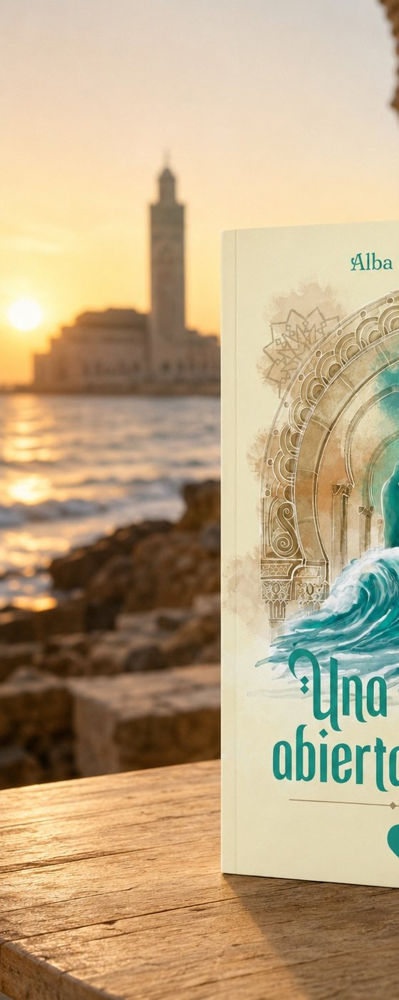
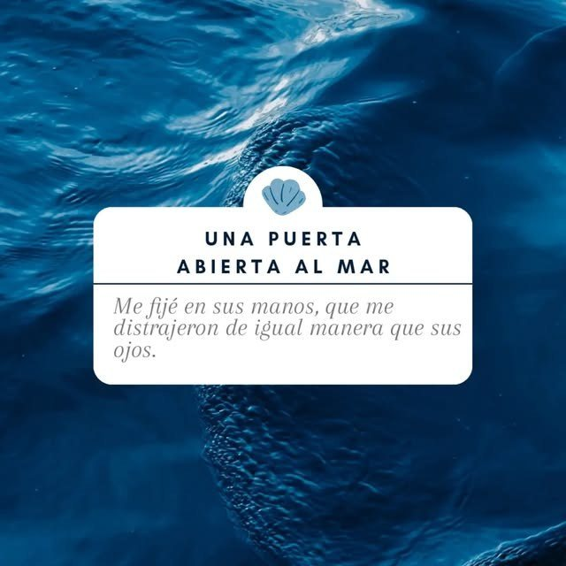
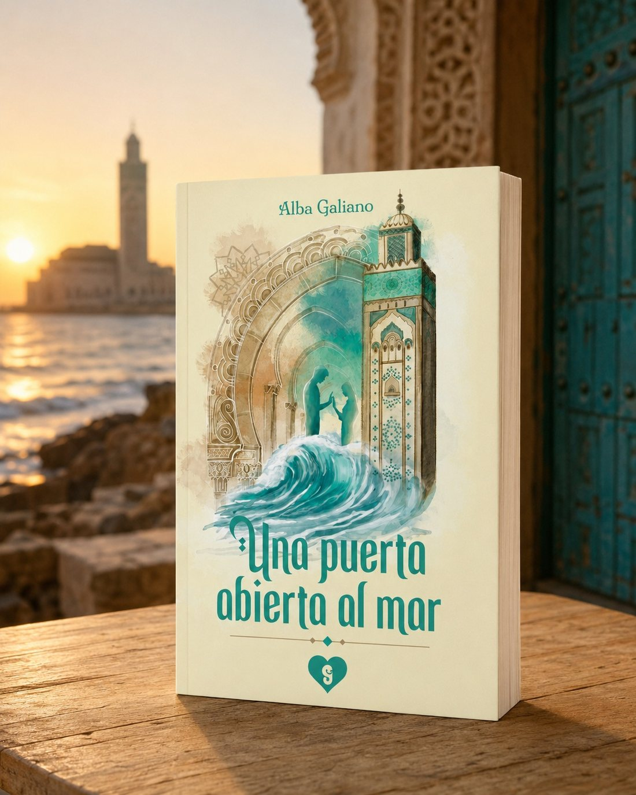

Casablanca como protagonista
Sus calles, el mar, el Ramadán, la cocina y las reuniones familiares forman parte de la historia.
Una historia de amor, identidad y libertad ambientada en Casablanca.

18,00 €
Nadia regresa a Casablanca para comenzar una nueva etapa profesional en el Consulado de España y reconciliarse con la ciudad en la que nació. Allí recupera el contacto con sus raíces, con los recuerdos de su infancia y con una parte de sí misma que había permanecido suspendida entre diferentes países y culturas.
La aparición de Samir transforma su relación con Casablanca. Profesor y entrenador de natación, él le muestra una ciudad cotidiana, familiar y llena de contrastes. La conexión entre ambos crece entre conversaciones, encuentros frente al mar y experiencias compartidas. Sin embargo, Samir arrastra obligaciones familiares y silencios que amenazan con decidir su futuro.
La novela está narrada desde las perspectivas de Nadia y Samir. Esta doble mirada permite conocer lo que ambos sienten y comprender cómo los miedos, las diferencias culturales y aquello que no se atreven a decir pueden transformar una relación.
Casablanca no funciona simplemente como escenario. Sus calles, el mar, el Ramadán, la gastronomía, las reuniones familiares y la convivencia entre distintas culturas forman parte esencial de la historia.
Una puerta abierta al mar combina romance, sensualidad, humor y tensión emocional para plantear una pregunta decisiva: ¿cuánto estamos dispuestos a arriesgar para elegir nuestra propia vida?

Sus calles, el mar, el Ramadán, la cocina y las reuniones familiares forman parte de la historia.

Nadia y Samir narran a la vez lo que sienten, lo que temen y lo que no se atreven a decir.

Amor, sensualidad, humor y tensión para hablar de identidad, familia y libertad.
Para quienes disfrutan de la novela romántica contemporánea con escenarios diferentes y conflictos emocionales profundos. Y para quien siente curiosidad por Marruecos, las relaciones interculturales, los nuevos comienzos y la búsqueda de las propias raíces.

En la tienda de la editorial, en Amazon o directamente a mí, firmada y dedicada.